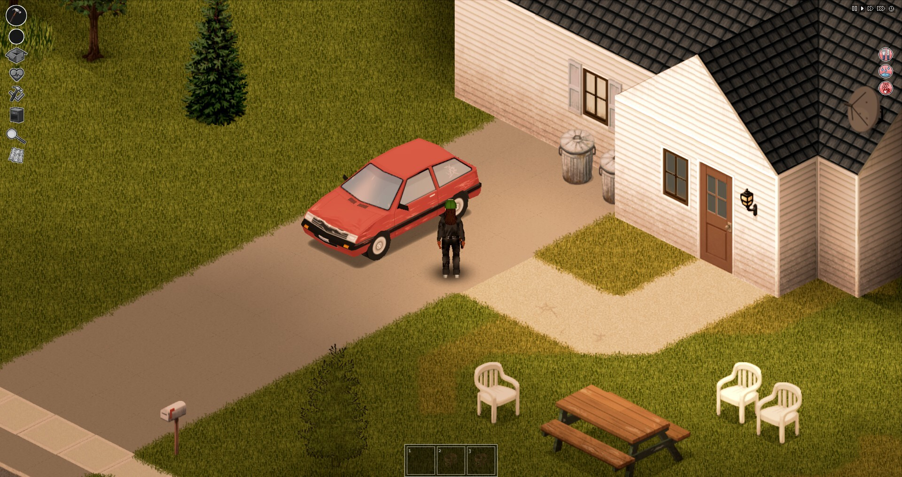
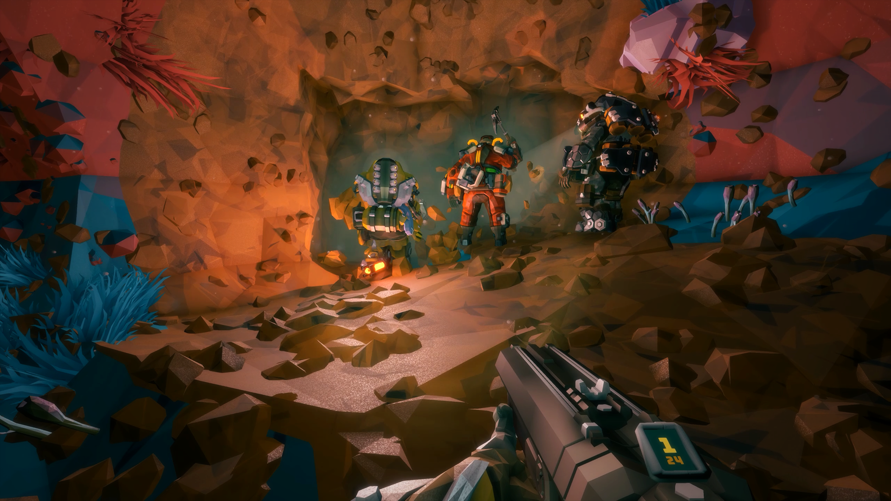

VIDEO GAMES
Quando tenho tempo livre ou nada para fazer eu costumo jogar alguns jogos diferentes e atualmente estou jogando dois jogos.
- Project zomboid

Project Zomboid é um jogo de sobrevivencia pós apocalipse zumbi muito realista, difícil e cheio de mecanicas, o jogo tem varias coiasas para se fazer e a principal delas é sobreviver, atualmente sobrevivi por 11 dias e esse é por enquanto o meu record.
- Deep Rock Galactic

Deep Rock Galactic é um jogo bem simples, você é um anão minerador (existem 4 classes de anões) que trabalha em uma empresa, sua tarefa é descer em um planeta, minerar os recursos, sobrêviver em meio a vida selvagem do planeta, concluir seu trabalho, ir embora e receber seu pagamento.
Esse jogo é basicamente uma vida de carteira assinada porém divertido.